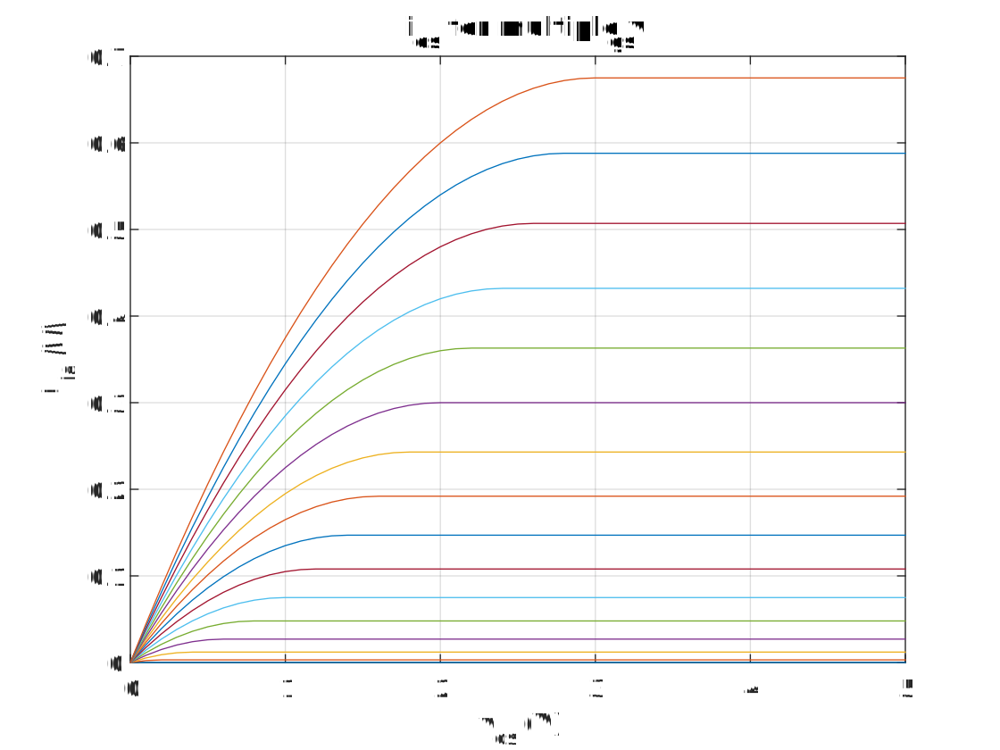

DC analysis
It is possible to sweep over multiple sources for a DC analysis. It is possible to construct DC transfer curves using this type of analysis. This type of simulation is run by the DC class. Consider the following circuit:

We wish to find the I-V curve for multiple Vgs voltages. This can be achieved by passing multiple SweepConfiguration-objects to the DC constructor.
The code looks as follows:
// Make the bipolar junction transistor
var nmos = new Mosfet1("M1");
nmos.Connect("d", "g", "0", "0");
var nmosmodel = new Mosfet1Model("example");
nmosmodel.SetParameter("kp", 150.0e-3);
nmos.SetModel(nmosmodel);
// Build the circuit
var ckt = new Circuit(
new VoltageSource("Vgs", "g", "0", 0),
new VoltageSource("Vds", "d", "0", 0.0),
nmos
);
// Sweep the base current and vce voltage
var dc = new DC("DC 1", new[]
{
new SweepConfiguration("Vgs", 0, 3, 0.2),
new SweepConfiguration("Vds", 0, 5, 0.1),
});
// Export the collector current
var currentExport = new RealPropertyExport(dc, "M1", "id");
// Run the simulation
dc.ExportSimulationData += (sender, args) =>
{
var vgsVoltage = dc.Sweeps[0].CurrentValue;
var vdsVoltage = dc.Sweeps[1].CurrentValue;
var current = currentExport.Value;
};
dc.Run(ckt);
First we build an NMOS transistor. For this we need a Component, which we can connect to nodes in the circuit. Most components also need a Model in order to work. Models typically describe common environmental properties (eg. threshold voltage, transconducance gain, etc.) while components will typically describe behavior on an individual level (eg. width, length, device temperature, etc.).
In our case, the component is a Mosfet1, which needs a Mosfet1Model to work. Every component or model can have parameters, which can be set by using the method SetParameter. The parameter names for MOS level 1 transistors are defined in the model specification and are all lower case.
After running and plotting the data we get:
